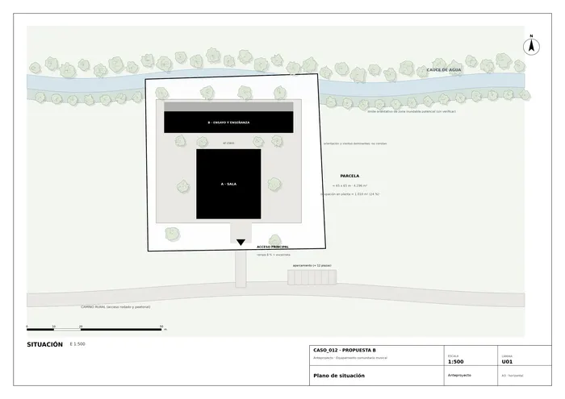
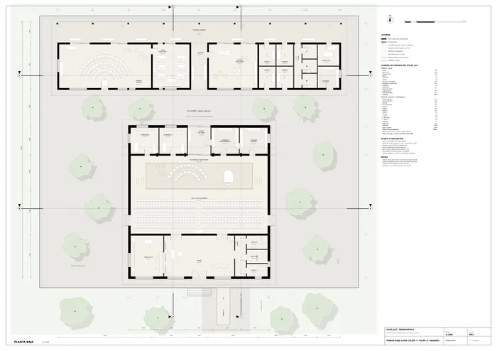
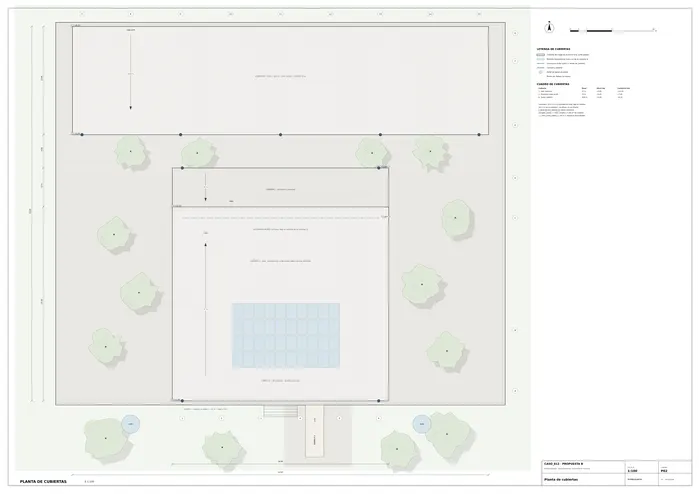
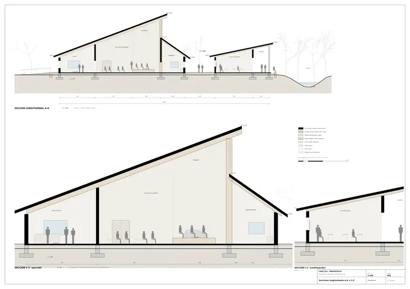
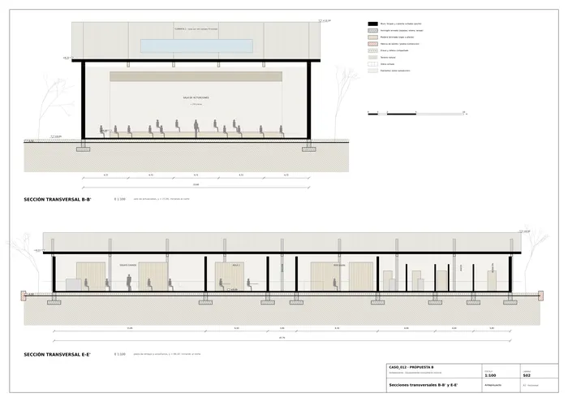
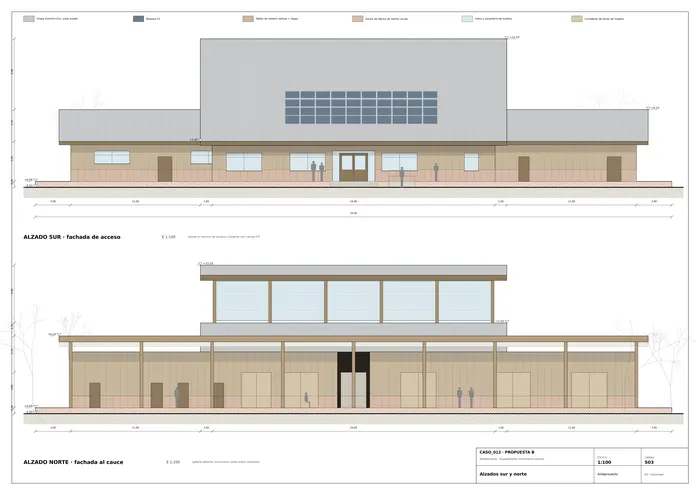
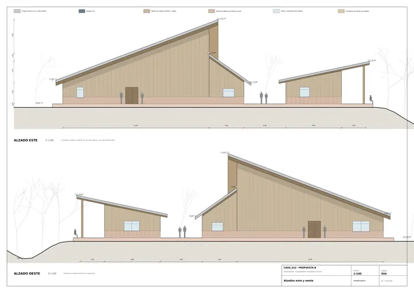
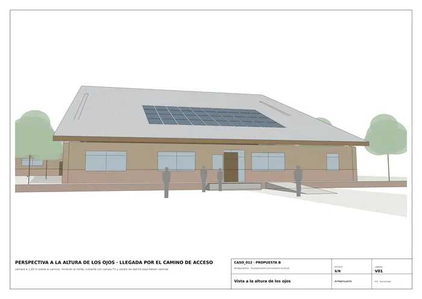
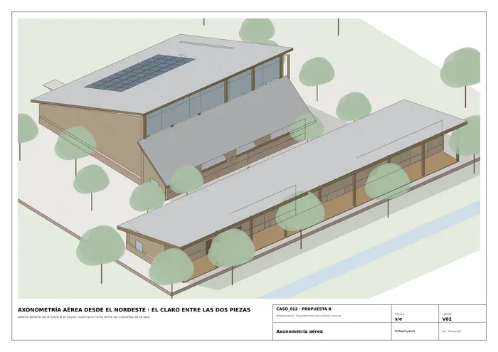
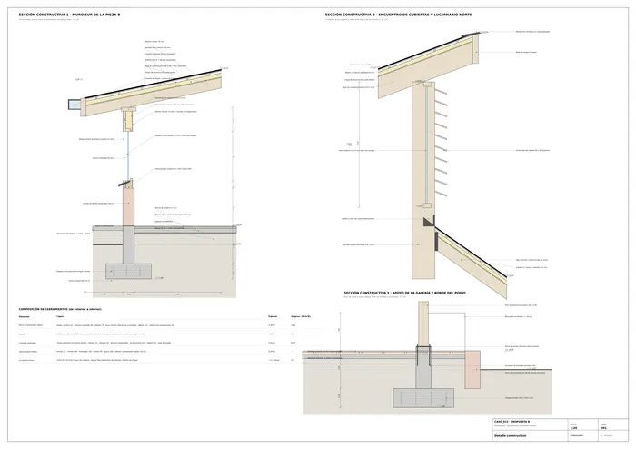

Caso 012 · Colectivo C733 · 2021 · equipamiento social (centro comunitario / casa de la música)
Dos piezas que se miran a través de un claro. Una sala alta, de cubiertas opuestas que dejan entrar la luz por una rendija al norte, y un pabellón bajo, abierto hacia el cauce, como en el boceto. Entre ambos queda el claro, una plaza de unos 300 m² que es el tercer volumen del proyecto: el escenario de la sala se abre a él por un portón de 3,85 m y la comunidad puede reunirse fuera cuando dentro no cabe.
Hipótesis de partida, porque el encargo no las da: cauce al norte, acceso por el sur, latitud norte (el faldón sur de la sala, a 20°, recibe el campo fotovoltaico).
| 1 · Dos piezas y un claro | 2 · Monolito apilado (ajustado: patio central, planta baja sobre podio) | 3 · Aldea de cabañas (ajustado: podio común y senda cubierta) | |
|---|---|---|---|
| Programa | sala 250 pl. + escuela en dos piezas de uso distinto, sin interferencia acústica | todo en una caja de 2 plantas, ensayos alrededor de la sala | 6 cabañas + sala; la sala queda con poca altura |
| Clima | ventilación cruzada y efecto chimenea en la sala; pabellón de crujía de 7,4 m | planta profunda, poca ventilación cruzada; necesita climatización | buena ventilación, pero cubiertas y fachada multiplicadas |
| Vistas | pabellón y galería abiertos al cauce; sala cerrada | solo el perímetro mira al cauce | todas las cabañas miran al cauce, pero la senda cubierta de 45 m alarga los recorridos |
| Acceso / normativa | un solo nivel, rampa 8 %, evacuación directa | requiere ascensor y escalera protegida | itinerario accesible largo; ocupa la ribera inundable |
| Decisión | elegido | descartado: tras el ajuste sigue necesitando dos niveles y ascensor | descartado: tras el ajuste sigue ocupando la ribera, con más cubierta por m² útil |
El partido 3 es el que cuestiona un supuesto no impuesto (que el programa sea un edificio único). Se descarta por un motivo que persiste tras ajustarlo, no por comodidad. El partido 1 gana por la acústica (separa la sala de las aulas), por un único nivel accesible y porque el claro funciona como espacio exterior de reunión.
| E1 · lamas verticales sobre vidrio | E2 · tablón vertical sobre zócalo de ladrillo, huecos recortados y correderas (elegida) | |
|---|---|---|
| Hueco / macizo | 70 % vidrio | sala 15 % de hueco; galería del pabellón 85 % abierta con correderas de lamas |
| Material y profundidad | piel ligera de 15 cm | muro de 0,30 m con cámara ventilada de 40 mm, alero de 1,2 m |
| Soleamiento y vistas | el sol es casi cenital: la fachada sur de vidrio se sobrecalienta y la sala necesita masa acústica | la fachada sur es opaca con ventanas altas protegidas; la norte (cauce) se abre con correderas, sin sol directo |
E2 recoge del boceto los tablones verticales y el zócalo, y reserva la transparencia para la galería y el lucernario norte. Un hueco en un paño no basta en la sala, porque necesita masa para la acústica y para el calor.
Pieza A (sala, 24 x 26 m). Foyer, bar-office y aseos al sur; sala de actuaciones (170 m², ≈ 250 plazas, 320 de pie) y escenario con bastidores (136 m²); camerinos y almacenes al norte, separados por el pasaje de carga que une el escenario con el claro. Pieza B (ensayo y enseñanza, 48 x 8 m). Ensayo grande (115 m²), aula colectiva, aula de percusión, 4 cabinas, aseos, dirección y almacén, todo con salida a una galería cubierta de 3,5 m (168 m²) que da al cauce y con el zaguán que atraviesa de claro a galería. Todo el edificio se levanta sobre un podio de +0,50 m (cota ±0,00), por si la parcela es inundable.
| Exigido | Propuesto | Cumple / desviación |
|---|---|---|
| Espacio para actuaciones y reunión (nº y m² a definir) | 1 sala 170,5 m² + 1 escenario y bastidores 135,7 m² + 1 foyer 82,4 m² + el claro (≈ 300 m² exterior) | Cumple |
| Espacios de ensayo y enseñanza (a definir) | Ensayo grande 1 x 115,3 m²; aula colectiva 1 x 46,3 m²; aula de percusión 1 x 61,1 m²; cabinas 4 (10,1 · 10,3 · 10,1 · 10,3 m²); zaguán 20,4 m². Docencia total 263,5 m² | Cumple. Una sola aula colectiva, porque el ensayo y la percusión absorben la enseñanza en grupo |
| Servicios y apoyo (aseos, almacén, office) | Aseos A: H 7,5 · PMR 7,9 · M 8,0 m² + distribuidor 12,9; aseos B: H 5,9 · PMR 5,5 · M 5,9 m² + distribuidor 9,3; bar-office 38,4; camerinos 2 (21,0 y 20,7); almacén de instrumentos 20,7; almacén de escena 21,0; almacén B 13,1; dirección 13,1; pasaje de carga 17,1 | Cumple |
| Espacios exteriores | Claro ≈ 300 m²; galería cubierta 168 m²; jardín y ribera; aparcamiento de ≈ 12 plazas en el camino | Cumple |
| Superficie construida 800-1.800 m² | Útil 900,7 m² (+ galería 168). Construida 1.008 m² + galería 168 = 1.176 m² | Cumple |
| Usuarios y presupuesto (no constan) | Aforo de la sala 250 sentados; 5 grupos de ensayo simultáneos | Sin dato: se fija el aforo como hipótesis |
| Normativa (no consta) y posible zona inundable | Podio +0,50 m; la galería queda a unos 5 m del límite orientativo de inundación; criterios de accesibilidad y evacuación del CTE adoptados por analogía | Desviación: hay que verificar la cota de inundación T = 100 años; si exige más, se sube el relleno y se alarga la rampa |
| Edificación existente | Ninguna (solar libre): todo es obra nueva | No aplica |
Porticos de madera laminada GL28h cada 4,72 m. Cubierta 1 (sala): vigas continuas de 0,24 x 0,58 m sobre tres apoyos: muro sur (eje A), muro del foyer (eje B), luces 7,3 + 13,5 m y voladizo de 1,3 m, y la línea de pilares del escenario (eje C). Pilares de 0,30 x 0,60 m y 10,8 m de altura, arriostrados a +7,0 m por las vigas de la cubierta 2 (λ ≈ 80). Cubierta 2: vigas de 0,20 x 0,38 m, luz 4,8 m. Pabellón: vigas de 0,20 x 0,45 m, luz 7,7 m más 3,3 m de voladizo hasta los pilares de la galería (0,26 x 0,26 m, cada 6 m). Estabilidad: muros de bloque armado en los ejes B, C y D y en los hastiales, con arriostramiento de madera. Cimentación: zapatas aisladas de 1,6 x 1,6 m y corridas de 1,2 m, arriostradas, a –1,40 m, para una tensión admisible de 100 kPa (a comprobar con estudio geotécnico). Solera sobre grava y relleno compactado.
Zócalo de ladrillo cocido visto (1,0 m) sobre barrera antihumedad; muro de entramado ligero de 0,30 m: tablón vertical de madera tratada 22 mm · cámara ventilada 40 · tablero 15 · lana mineral 160 · tablero 19 · cámara de instalaciones. Cubierta ventilada: chapa de aluminio-zinc de junta alzada · tablero 22 · cámara 50 · lámina transpirable · lana mineral 100 · tablero 20 · viga laminada (0,50 m en total). El detalle muestra la cimentación, el alero y la ventana (muro sur del pabellón), el encuentro de las cubiertas con el lucernario norte y el apoyo de la galería.
Sol casi cenital: aleros de 1,2 m al sur, fachada sur opaca con ventanas altas, galería sombreada al norte y cubierta ventilada contra el calor. Ventilación cruzada en el pabellón (ventanas altas al sur, correderas de lamas al norte). En la sala, el aire entra por el foyer y sale por el lucernario norte (24 x 3,3 m, bajo el voladizo de 1,3 m de la cubierta 1: luz difusa, sin sol directo, efecto chimenea); ventiladores de techo en todas las aulas. Lluvia (> 1.800 mm): aleros, canalones, aljibes y podio elevado; madera tratada y zócalo de ladrillo contra la humedad.
Todo el edificio está a una cota (±0,00). Acceso por rampa del 8 % (6,25 m, 2,2 m de ancho, pasamanos doble) y una escalinata de 4 peldaños; un aseo accesible en cada pieza. Sala: 2 puertas dobles al foyer (2 x 1,80 m) y 2 salidas laterales al exterior (2 x 1,80 m); el escenario sale por el portón de 3,85 m al claro; recorrido máximo de 25 m a un espacio exterior seguro. Cada aula del pabellón tiene salida directa al claro o a la galería, y el zaguán la comunica con ambos.

U01 · Plano de situación
P01 · Planta baja (cota ±0,00 = +0,50 s/ rasante)
P02 · Planta de cubiertas
S01 · Secciones longitudinales A-A' y C-C'
S02 · Secciones transversales B-B' y E-E'
S03 · Alzados sur y norte
S04 · Alzados este y oeste
V01 · Vista a la altura de los ojos
V02 · Axonometría aérea
D01 · Detalle constructivoMemoria de la propuesta tal como la entregó el sistema. Se han omitido las notas internas del proceso (revisiones, control de reconocimiento y referencias a archivos de trabajo).